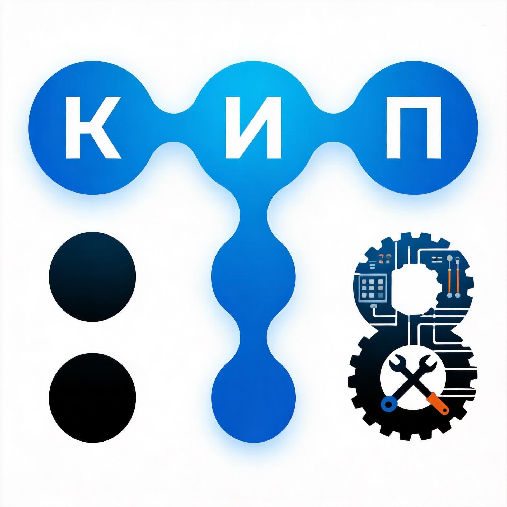
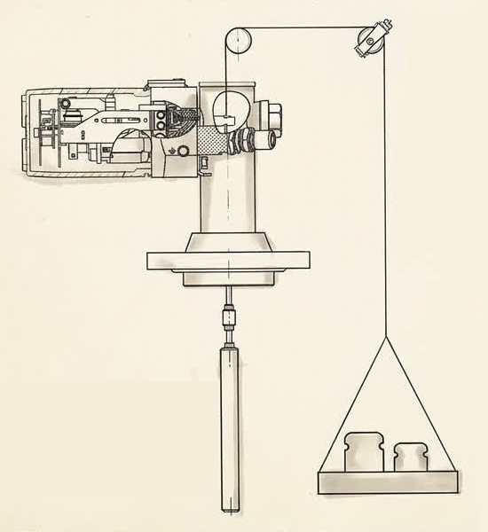
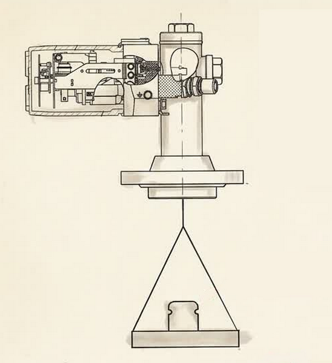

КИП и А · Контроль · Измерения · Автоматизация

КИП и А
Конвертер единиц
КИП и А · Конвертер единиц измерения
Давление
Значение
Единица измерения
КИП и А · Конвертер давления
Расход
Значение
Единица измерения
КИП и А · Конвертер расхода
Вес и масса
Значение
Единица измерения
КИП и А · Конвертер массы
Температура
Значение
Единица измерения
КИП и А · Конвертер температуры
Длина и расстояние
Значение
Единица измерения
КИП и А · Конвертер длины
Плотность
Значение
Единица измерения
КИП и А · Конвертер плотности
Время
Значение
Единица измерения
КИП и А · Конвертер времени
Объём
Значение
Единица измерения
КИП и А · Конвертер объёма
Шкала-сигнал
Тип шкалы
Линейная: прямая зависимость · Квадратичная: сигнал ∝ (шкала)² · Корнеизвлекающая: сигнал ∝ √(шкала)
Диапазон шкалы измерения
Тип выходного сигнала
Диапазон сигнала
мА
КИП и А · Шкала-сигнал
Автоматический выключатель
Тип питания
Тип нагрузки
Мощность нагрузки (P)
Суммарная мощность потребителей (КИП, АСУ ТП)
Тип потребителей
Тип линии и сечение кабеля
Характеристика срабатывания
B — чувствительный · C — универсальный · D — инерционный · Z — сверхчувствительный
Количество потребителей (опционально)
Для расчёта суммарного тока группы приборов
КИП и А · Автоматический выключатель · ГОСТ Р 50345-2010 / ПУЭ
Сужающее устройство
Выбор расчёта
РД 50-411-83 / ГОСТ 26969-86
КИП и А · Сужающее устройство · Выбор расчёта
Перепад давления Δp
Тип среды
Параметры трубопровода
Внутренний диаметр трубы при 20°C · Материал
Рабочая температура, °C
Расход среды (Q)
Номинальный расход
Диаметр диска (d₂₀)
Диаметр отверстия диафрагмы при 20°C, мм
Параметры среды
Плотность · Кинематическая вязкость (сСт = мм²/с)
Избыточное давление, МПа (для газов)
Тип сужающего устройства
Материал диафрагмы
КИП и А · Перепад давления · РД 50-411-83
Расход среды Q
Тип среды
Параметры трубопровода
Внутренний диаметр трубы при 20°C · Материал
Рабочая температура, °C
Перепад давления (Δp)
Номинальный перепад давления
Диаметр диска (d₂₀)
Диаметр отверстия диафрагмы при 20°C, мм
Параметры среды
Плотность · Кинематическая вязкость (сСт = мм²/с)
Избыточное давление, МПа (для газов)
Тип сужающего устройства
Материал диафрагмы
КИП и А · Расход среды · РД 50-411-83
Сужающее устройство
Тип среды
Параметры трубопровода
Внутренний диаметр трубопровода при 20°C
Материал трубы · Рабочая температура, °C
Расход среды
Номинальный (максимальный) расход
Минимальный расход · Избыточное давление, МПа
Параметры среды
Плотность · Кинематическая вязкость (сСт = мм²/с)
Перепад давления
Номинальный перепад давления на диафрагме
Тип сужающего устройства
Материал диафрагмы
КИП и А · Диаметр диска · РД 50-411-83 / ГОСТ 26969-86
Библиотека КИП и А
Разделы библиотеки
Переход к папкам OneDrive
КИП и А · Библиотека · OneDrive
Расчёт погрешности
КИП и А · Расчёт погрешности
Датчик давления
Диапазон измерения
Класс точности (%)
Введите значение класса точности в % (например: 0.02, 0.1, 0.5, 1.0, 1.5, 2.5)
Текущее значение (опционально)
КИП и А · Датчик давления
Датчик температуры
КИП и А · Датчик температуры
Термопреобразователи сопротивления
Группа ТС
Тип ТС (НСХ)
Класс допуска
Температура (t), °C
КИП и А · ТС · ГОСТ 6651-2009
Термопары (ТП)
Тип термопары
Класс точности
Температура (t), °C
КИП и А · ТП · ГОСТ Р 8.585-2001
Расходомер
Диапазон измерения
Класс точности (%)
Введите значение класса точности в % (например: 0.2, 0.5, 1.0, 1.5, 2.0)
Текущее значение (опционально)
КИП и А · Расходомер
Уровнемер
Диапазон измерения
Класс точности (%)
Введите значение класса точности в % (например: 0.1, 0.2, 0.5, 1.0)
Текущее значение (опционально)
КИП и А · Уровнемер
Аналоговый преобразователь
Диапазон измерения
Класс точности (%)
Введите значение класса точности в % (например: 0.05, 0.1, 0.2, 0.5, 1.0)
Текущее значение (опционально)
КИП и А · Аналоговый преобразователь
Комплект приборов
Прибор 1
Класс точности (%)
Введите значение класса точности в %
Прибор 2
Класс точности (%)
Введите значение класса точности в %
Прибор 3 (опционально)
Класс точности (%)
Введите значение класса точности в %
КИП и А · Комплект приборов
Калибровка буйкового уровнемера

С буйком
Компенсационный метод калибровки
mгири = mвыт + mподвеса
mгири = mвыт + mподвеса

Без буйка
Имитация выталкивающей силы гирями
mгири = mбуйка − mвыт + mподвеса
mгири = mбуйка − mвыт + mподвеса
КИП и А · Буйковый уровнемер · Выбор метода
Буйковый уровнемер
Параметры буйка
Диаметр (D)
мм
Длина (L)
мм
Вес буйка в воздухе
⚖️ Масса буйка (кг)
Параметры жидкости
Тип среды
кг/м³
Подвесная система
⚙️ Масса тарелки/крюка, г
Выходной сигнал
📊 Сигнал: 4-20 мА
КИП и А · Буйковый уровнемер · Калибровка